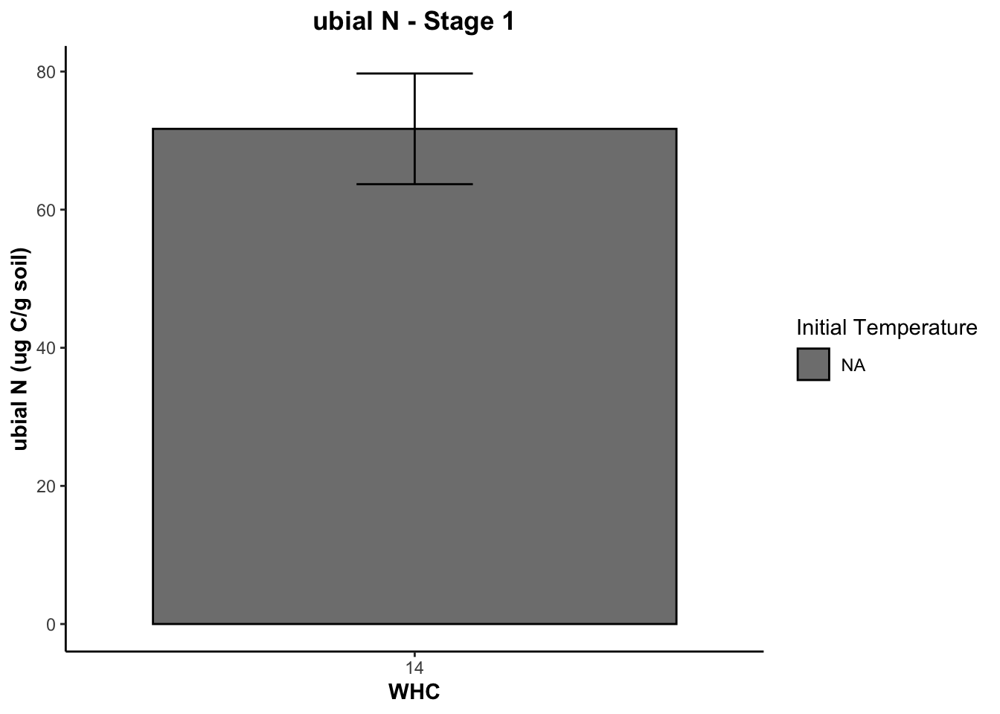

Sample.number Initial.Temperature WHC Stage Stage.name
1 PT-1 <NA> 14 1 pre treatment
2 PT-2 <NA> 14 1 pre treatment
3 PT-3 <NA> 14 1 pre treatment
4 PT-4 <NA> 14 1 pre treatment
5 PT-5 <NA> 14 1 pre treatment
6 37 <NA> 90 2 Only water
Extractable.C..ug.C.g.soil. Extractable.N..ug.N.g.soil. ubial.C..ug.C.g.soil.
1 490.8155 108.8163 376.5886
2 481.7010 104.9009 387.6645
3 479.9743 104.4946 423.7208
4 480.5085 108.7082 419.4750
5 481.2533 106.2191 387.0063
6 507.4286 83.6719 374.8565
ubial.N..ug.N.g.soil. ubial.C.N
1 71.54852 5.263401
2 75.18283 5.156290
3 86.76098 4.883772
4 49.03985 8.553758
5 75.96642 5.094439
6 93.58984 4.005312Biogeochemistry Project
Packages
Data Set
Function to calculate mean and SEM
Summaries
Plotting ALL Stages
GOOD Extractable C graph
$Stage_1
$Stage_2
$Stage_3
$Stage_4
$Stage_5Anova results Extractable C
$Stage_1
[1] "ANOVA not performed: Insufficient levels in WHC or Initial.Temperature."
$Stage_2
[1] "ANOVA not performed: Insufficient levels in WHC or Initial.Temperature."
$Stage_3
Df Sum Sq Mean Sq F value Pr(>F)
WHC 1 10653 10653 2.251 0.156
Initial.Temperature 1 1977 1977 0.418 0.529
WHC:Initial.Temperature 1 1873 1873 0.396 0.539
Residuals 14 66256 4733
$Stage_4
Df Sum Sq Mean Sq F value Pr(>F)
WHC 1 2147 2147 2.200 0.1602
Initial.Temperature 1 532 532 0.545 0.4727
WHC:Initial.Temperature 1 3438 3438 3.522 0.0815 .
Residuals 14 13664 976
---
Signif. codes: 0 '***' 0.001 '**' 0.01 '*' 0.05 '.' 0.1 ' ' 1
$Stage_5
Df Sum Sq Mean Sq F value Pr(>F)
WHC 1 16156 16156 4.271 0.0578 .
Initial.Temperature 1 1475 1475 0.390 0.5424
WHC:Initial.Temperature 1 15570 15570 4.116 0.0619 .
Residuals 14 52960 3783
---
Signif. codes: 0 '***' 0.001 '**' 0.01 '*' 0.05 '.' 0.1 ' ' 1GOOD Extractable N
$Stage_1
$Stage_2
$Stage_3
$Stage_4
$Stage_5
Anova results Extractable N
$Stage_1
[1] "ANOVA not performed: Insufficient levels in WHC or Initial.Temperature."
$Stage_2
[1] "ANOVA not performed: Insufficient levels in WHC or Initial.Temperature."
$Stage_3
Df Sum Sq Mean Sq F value Pr(>F)
WHC 1 51551 51551 79.987 3.66e-07 ***
Initial.Temperature 1 20 20 0.032 0.861
WHC:Initial.Temperature 1 1273 1273 1.975 0.182
Residuals 14 9023 644
---
Signif. codes: 0 '***' 0.001 '**' 0.01 '*' 0.05 '.' 0.1 ' ' 1
$Stage_4
Df Sum Sq Mean Sq F value Pr(>F)
WHC 1 60124 60124 90.003 1.79e-07 ***
Initial.Temperature 1 140 140 0.209 0.655
WHC:Initial.Temperature 1 396 396 0.593 0.454
Residuals 14 9352 668
---
Signif. codes: 0 '***' 0.001 '**' 0.01 '*' 0.05 '.' 0.1 ' ' 1
$Stage_5
Df Sum Sq Mean Sq F value Pr(>F)
WHC 1 6798 6798 20.950 0.000431 ***
Initial.Temperature 1 6380 6380 19.662 0.000566 ***
WHC:Initial.Temperature 1 409 409 1.261 0.280283
Residuals 14 4543 325
---
Signif. codes: 0 '***' 0.001 '**' 0.01 '*' 0.05 '.' 0.1 ' ' 1GOOD ubial C graph
$Stage_1
$Stage_2
$Stage_3
$Stage_4
$Stage_5Anova results ubial C
$Stage_1
[1] "ANOVA not performed: Insufficient levels in WHC or Initial.Temperature."
$Stage_2
[1] "ANOVA not performed: Insufficient levels in WHC or Initial.Temperature."
$Stage_3
Df Sum Sq Mean Sq F value Pr(>F)
WHC 1 124271 124271 8.987 0.00959 **
Initial.Temperature 1 2024 2024 0.146 0.70776
WHC:Initial.Temperature 1 10760 10760 0.778 0.39261
Residuals 14 193588 13828
---
Signif. codes: 0 '***' 0.001 '**' 0.01 '*' 0.05 '.' 0.1 ' ' 1
$Stage_4
Df Sum Sq Mean Sq F value Pr(>F)
WHC 1 62008 62008 10.105 0.0067 **
Initial.Temperature 1 847 847 0.138 0.7159
WHC:Initial.Temperature 1 508 508 0.083 0.7778
Residuals 14 85908 6136
---
Signif. codes: 0 '***' 0.001 '**' 0.01 '*' 0.05 '.' 0.1 ' ' 1
$Stage_5
Df Sum Sq Mean Sq F value Pr(>F)
WHC 1 8741 8741 1.064 0.320
Initial.Temperature 1 817 817 0.100 0.757
WHC:Initial.Temperature 1 25977 25977 3.164 0.097 .
Residuals 14 114960 8211
---
Signif. codes: 0 '***' 0.001 '**' 0.01 '*' 0.05 '.' 0.1 ' ' 1GOOD ubial N graph
$Stage_1
$Stage_2
$Stage_3
$Stage_4
$Stage_5Anova results ubial N
$Stage_1
[1] "ANOVA not performed: Insufficient levels in WHC or Initial.Temperature."
$Stage_2
[1] "ANOVA not performed: Insufficient levels in WHC or Initial.Temperature."
$Stage_3
Df Sum Sq Mean Sq F value Pr(>F)
WHC 1 11213 11213 7.825 0.0143 *
Initial.Temperature 1 4710 4710 3.287 0.0913 .
WHC:Initial.Temperature 1 1745 1745 1.218 0.2884
Residuals 14 20062 1433
---
Signif. codes: 0 '***' 0.001 '**' 0.01 '*' 0.05 '.' 0.1 ' ' 1
$Stage_4
Df Sum Sq Mean Sq F value Pr(>F)
WHC 1 5899 5899 11.151 0.00487 **
Initial.Temperature 1 1174 1174 2.218 0.15857
WHC:Initial.Temperature 1 294 294 0.556 0.46811
Residuals 14 7406 529
---
Signif. codes: 0 '***' 0.001 '**' 0.01 '*' 0.05 '.' 0.1 ' ' 1
$Stage_5
Df Sum Sq Mean Sq F value Pr(>F)
WHC 1 93 92.8 0.226 0.642
Initial.Temperature 1 178 178.3 0.434 0.521
WHC:Initial.Temperature 1 131 131.5 0.320 0.580
Residuals 14 5745 410.3 GOOD ubial C/N ratio graph
$Stage_1
$Stage_2
$Stage_3
$Stage_4
$Stage_5
Anova results ubial C/N ratio
$Stage_1
[1] "ANOVA not performed: Insufficient levels in WHC or Initial.Temperature."
$Stage_2
[1] "ANOVA not performed: Insufficient levels in WHC or Initial.Temperature."
$Stage_3
Df Sum Sq Mean Sq F value Pr(>F)
WHC 1 2.487 2.487 1.048 0.3246
Initial.Temperature 1 7.679 7.679 3.236 0.0953 .
WHC:Initial.Temperature 1 4.265 4.265 1.798 0.2030
Residuals 13 30.846 2.373
---
Signif. codes: 0 '***' 0.001 '**' 0.01 '*' 0.05 '.' 0.1 ' ' 1
1 observation deleted due to missingness
$Stage_4
Df Sum Sq Mean Sq F value Pr(>F)
WHC 1 2.809 2.8090 1.308 0.272
Initial.Temperature 1 0.850 0.8503 0.396 0.539
WHC:Initial.Temperature 1 1.494 1.4939 0.695 0.418
Residuals 14 30.075 2.1482
$Stage_5
Df Sum Sq Mean Sq F value Pr(>F)
WHC 1 3.344 3.344 4.791 0.0460 *
Initial.Temperature 1 0.247 0.247 0.355 0.5610
WHC:Initial.Temperature 1 2.518 2.518 3.609 0.0783 .
Residuals 14 9.769 0.698
---
Signif. codes: 0 '***' 0.001 '**' 0.01 '*' 0.05 '.' 0.1 ' ' 1